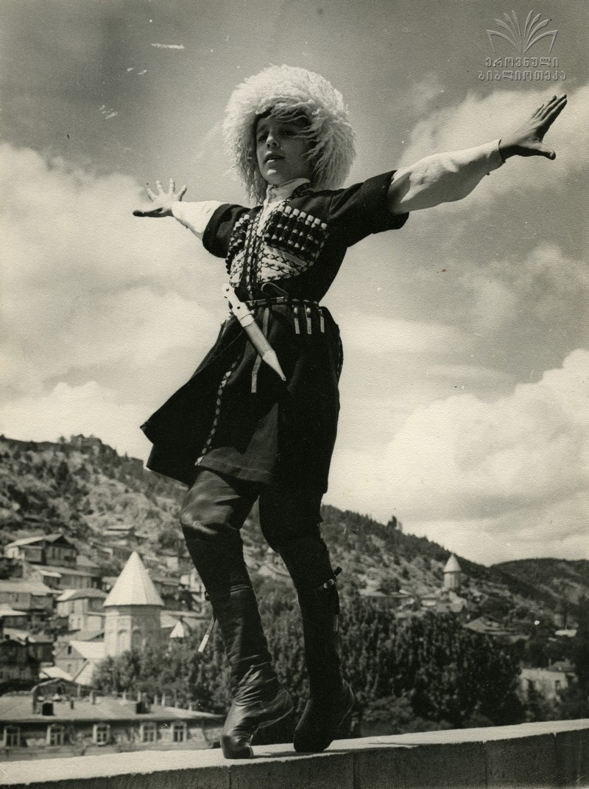
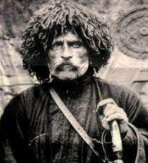
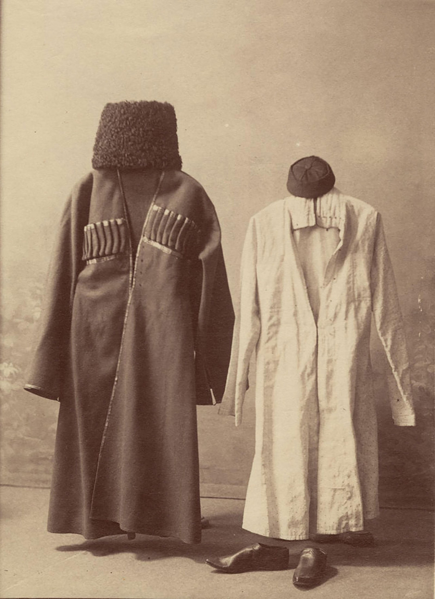
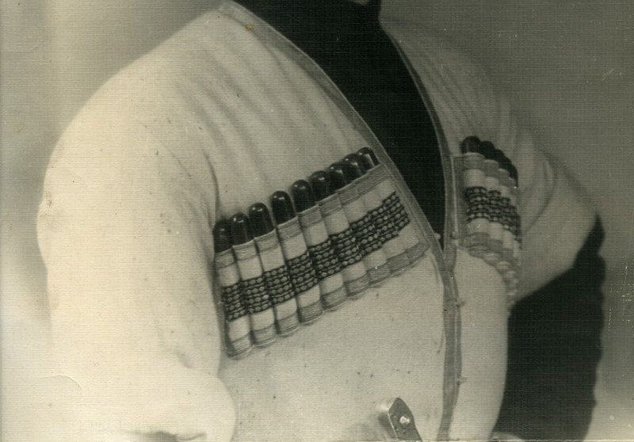

The first researcher who studied the traditional Georgian clothes Vakhushti Batonishvili. He lived in the 18th century and started describing our national clothes not only in his century but also in the 11-13th centuries. Also, the Georgians have an exciting recordings from the foreign travelers. They could not hide their emotions and admiration for our clothes. They were trying to compare the Georgian style to the European costumes.
   Chokha is sewn of thick fabric and is tight on the waist and wide on the bottom. In some parts of the Caucasus there are also female Chokhas.
In scientific literature, Chokha is known as Cherkeska, meaning that it was invented in Circassia and then it was spread among the Caucasian nations. Cherkeska is a Russian name for Circassian people.
Generally, the Chokha outfit includes a khanjali (the sword), akhalukhi (a shirt worn underneath the chokha), masrebi (the bullets), and kabalakhi (a hood, separate from the robe) or nabdis kudi (a tall fur hat).
| Khevsuruli Chokha | Kartli-Kakhetian Chokha | General Caucasian Chokha |
|---|---|---|
| short unclothed garment, composed of trapezoidal details, azgots. The front, the porch, was richly decorated with appliques. On the pages he had a skirt clutch, a chak, or military, which had been coming up for years. Chokha depicted various ornamental symbols | a long, knee-length garment with a wedge-shaped opening around the chest to make Akhalukh appear. It was worn largely unbuttoned, with a few chakras inserted into the skirts, the names extended to the wrists, and often worn over the top. Georgian, Dagestani and Ossetian shawls were used, mainly black, chestnut and blue. | mostly sewn in the same way, but the upper part was settled and was tightly adjusted to the waist. On both sides of the breast there were sashes, sometimes silver threads were fastened on the tops of the breastplates, which were fastened to the ring. This type of chokha had a leather, absinthe belt, the silver details of which were richly decorated. It was sewn from both domestic and fabric fabrics |
is a wool hat worn by men throughout the Caucasus and also in uniformed regiments in the region and beyond. The word papakha is of Turkic origin
Papaqs are very important to mountainous peoples’ of the Caucasus, where a man's hat is considered a very important part of his identity. Papakhi are donned by the Circassians, Chechens, Dagestanians, and other Caucasian tribes.
For more information